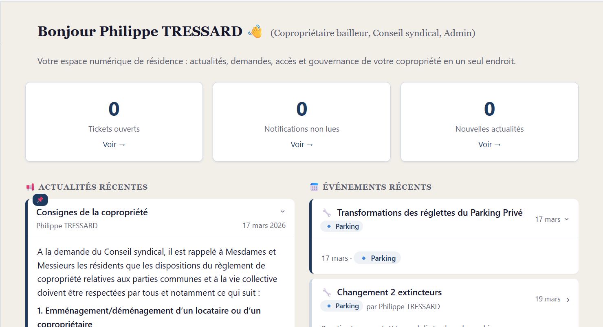
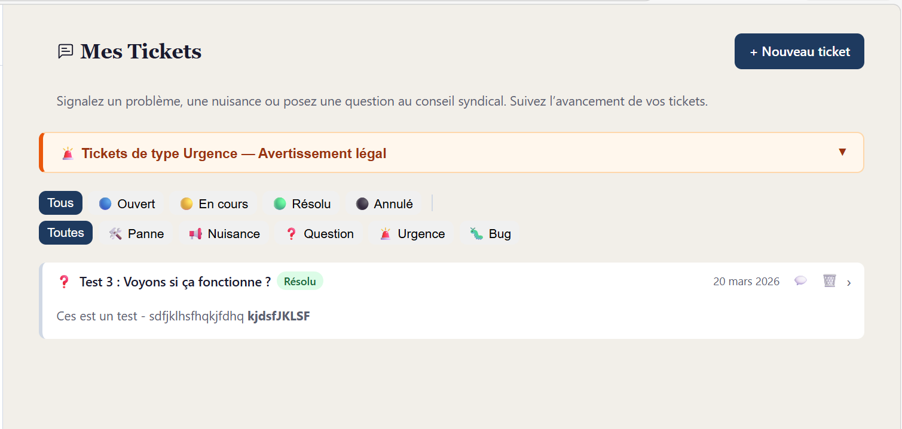
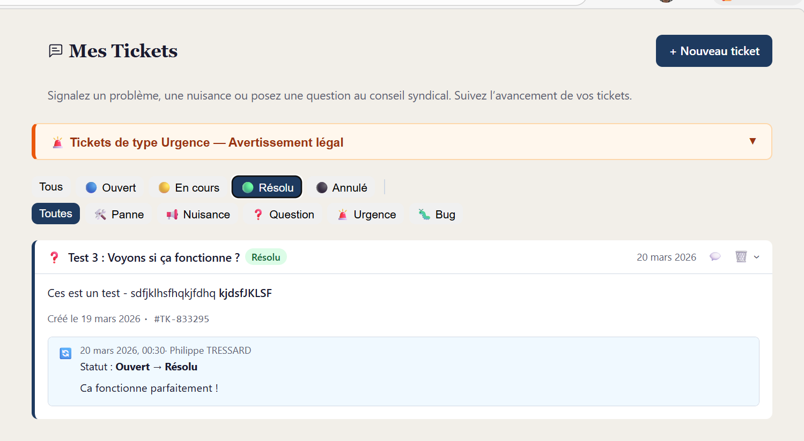
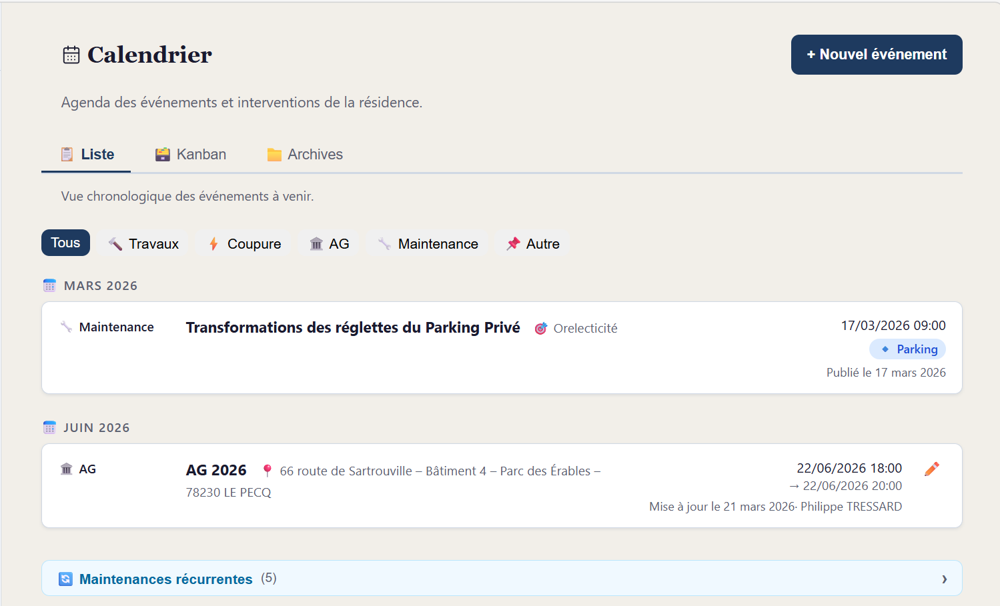
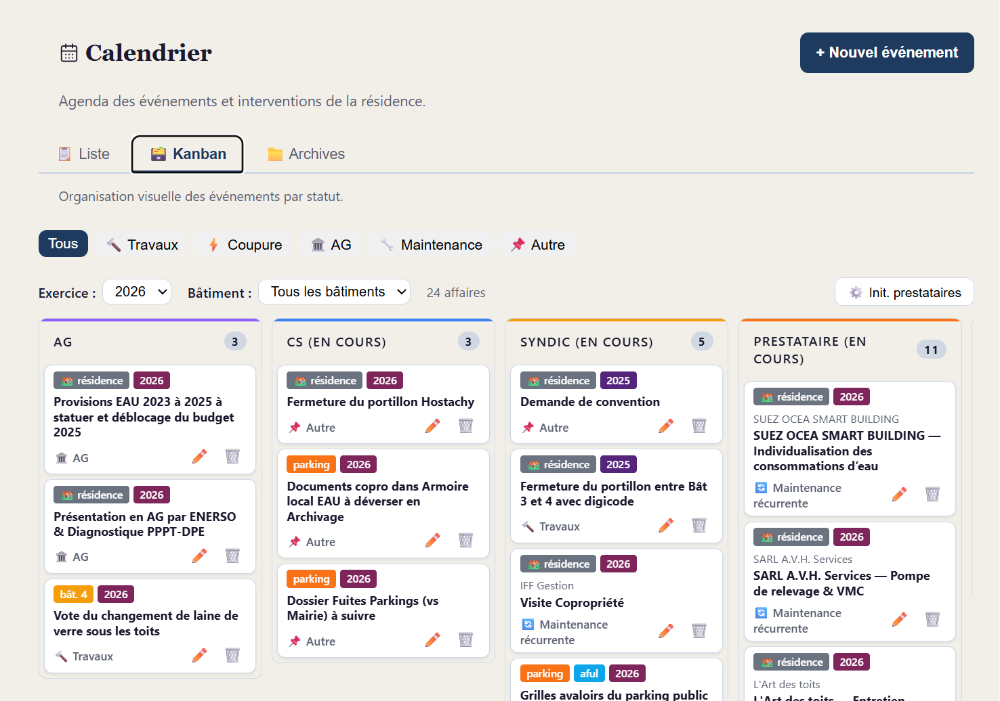
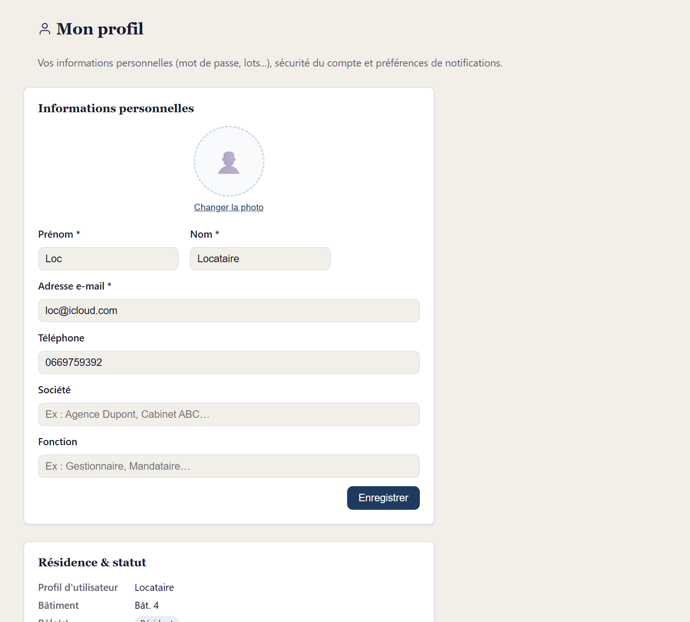
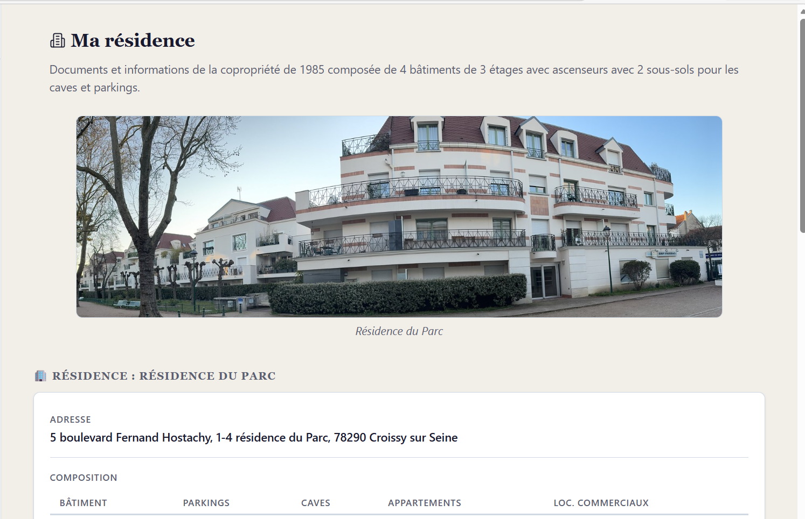
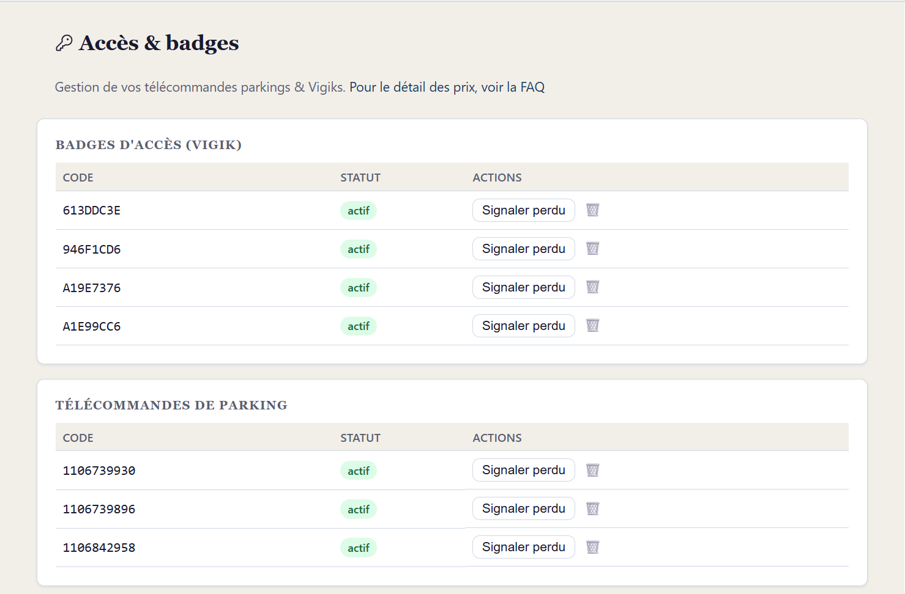

1. Tableau de bord
Premier écran après connexion. KPIs, alertes urgentes, prochaines échéances et fil d'activité chronologique.
Accueil completBienvenue sur votre extranet de residence
Ce manuel a ete pense pour un coproprietaire presse. Vous n'avez pas besoin de tout lire : choisissez une action, ouvrez la bonne rubrique et suivez les etapes utiles.
Bon reflexe : commencez par Actualites, Calendrier et Tickets. Ce sont les 3 ecrans les plus utiles au quotidien.
Guide express
Si vous debutez, suivez seulement ces 3 etapes. Vous aurez deja l'essentiel pour utiliser 5Hostachy sans stress.
Entrez votre e-mail et votre mot de passe. Si besoin, creez votre compte ou utilisez le lien de reinitialisation.
Choisissez ce que vous voulez recevoir dans l'appli et par e-mail pour eviter les oublis sans etre submerge.
Ensuite, allez directement a votre besoin du moment : signaler, verifier, telecharger ou demander.
Allez dans Tickets pour faire une demande claire et suivre son avancement.
Je veux verifier une dateOuvrez Calendrier pour voir les interventions, coupures, AG et suivis de travaux.
Je veux retrouver un documentOuvrez Ma residence pour les documents utiles de la copropriete.
Je veux demander un badgeLa rubrique Acces & badges explique la procedure et le suivi.
Je veux lire les informations importantesLes Actualites regroupent les annonces officielles du conseil syndical.
Je veux regler mon compteDans Mon profil, modifiez vos informations et vos preferences de notifications.
Vous etes presse ? Choisissez votre profil et ouvrez seulement les rubriques vraiment utiles pour vous.
Besoin d'un support ultra-court a afficher ou imprimer ? Utilisez la version 1 page.
Ouvrir la version 1 page8 reperes visuels pour trouver rapidement ou cliquer dans les rubriques les plus consultees.

Premier écran après connexion. KPIs, alertes urgentes, prochaines échéances et fil d'activité chronologique.
Accueil complet
Utilisez le bouton de creation pour signaler un probleme en moins de 2 minutes.
Action prioritaire
Consultez le statut de vos demandes : ouvert, en cours, résolu ou annulé.
Suivi clair
Vue chronologique pour savoir ce qui arrive cette semaine ou ce mois-ci.
Planifier vite
Visualisez l'avancement des actions par colonne (syndic, prestataire, termine).
Pilotage
Reglez votre mot de passe, vos infos et la matrice de notifications appli/e-mail.
Parametres
Retrouvez les documents importants (AG, reglement, informations communes).
Documents
Demandez un badge ou une telecommande et suivez la validation de votre demande.
Acces residenceRetenez surtout une chose : elle vous evite de chercher partout.
5Hostachy est votre espace numérique de copropriete. Au lieu de jongler entre affichage papier, e-mails, appels et documents perdus, vous retrouvez tout au meme endroit.
Quand vous avez une action a faire, voici ou aller sans hesiter.
Quand vous voulez simplement savoir ce qu'il se passe dans la residence.
Quand vous cherchez une piece ou une information de reference.
Le vrai benefice n'est pas technique. C'est un gain de temps.
Conseil simple : si vous ne savez pas ou cliquer, commencez par la question suivante. Est-ce que je veux agir, verifier une information, ou retrouver un document ? La bonne rubrique devient alors evidente.
Vos données restent chez vous. L'application est hébergée directement dans votre immeuble, sur un serveur local. Aucune donnée n'est envoyée à des plateformes commerciales externes.
Créer votre compte et accéder à l'application.
Sur votre téléphone ou ordinateur, rendez-vous à l'adresse indiquée sur le panneau d'affichage de la résidence.
Sur la page d'accueil, en bas du formulaire de connexion.
Votre prénom, nom, adresse e-mail, numéro de téléphone et mot de passe. Sélectionnez votre bâtiment et votre numéro de lot (appartement / parking / cave).
Cochez la case pour accepter la politique de confidentialité. Cette étape est obligatoire.
Si votre nom figure dans la liste des résidents, votre compte est actif immédiatement. Sinon, un membre du conseil de votre bâtiment le validera sous 48h.
Si votre nom est reconnu automatiquement, votre compte est actif immédiatement et vous recevez un e-mail de confirmation.
Sinon, un délai de validation s'applique. Un membre du conseil syndical vérifie manuellement que la demande est légitime — cette étape garantit que seuls les copropriétaires, locataires, syndic et mandataires ayant un lien réel avec la résidence peuvent accéder à l'application. Comptez généralement 24 à 48 h (hors week-end). Vous serez notifié par e-mail dès que votre compte est activé.
Sur la page d'accueil de l'application.
Vous arrivez directement sur votre tableau de bord.
Mot de passe oublié ? Cliquez sur « Mot de passe oublié » sous le formulaire. Entrez votre adresse e-mail : vous recevrez un lien de réinitialisation valable 1 heure. Une fois le nouveau mot de passe défini, toutes vos sessions actives sont automatiquement fermées.
Votre page d'accueil après connexion : un aperçu complet de la vie de la résidence.
Le tableau de bord est la première page affichée après connexion. Il est personnalisé selon votre rôle (propriétaire, locataire, conseil syndical…) et votre bâtiment.
Les publications urgentes actives apparaissent en tête, dans un encadré rouge avec une barre de progression temporelle.
Quatre cartes de synthèse, chacune cliquable vers la page concernée :
Événements à venir et contrats/assurances arrivant à échéance, triés par date.
Les échéances sont filtrées selon votre rôle : les locataires ne voient pas les éléments liés aux assemblées générales. Seuls les éléments concernant votre bâtiment sont affichés.
Timeline chronologique regroupée par jour, couvrant les 12 derniers mois.
Vos informations personnelles, sécurité du compte et préférences.
En bas du menu de navigation, vous voyez votre prénom (ex : « Philippe ») à la place d'un lien « Profil ». C'est votre raccourci personnel vers la page de profil — cliquez dessus pour y accéder.
Le menu affiche votre prénom plutôt que le mot « Profil » pour vous identifier en un coup d'œil et confirmer que vous êtes bien connecté avec votre compte.
Modifier votre prénom, nom, téléphone, société / fonction (syndic et mandataires), et photo de profil.
Renseignez votre mot de passe actuel, puis le nouveau (minimum 8 caractères).
Ajuster séparément les notifications dans l'appli et par e-mail pour les tickets, actualités et documents.
Consultez la liste de vos lots (appartement, parking, cave) associés à votre compte.
Un réglage précis permet de rester informé sans surcharge: vous choisissez, pour chaque type d'action, le canal dans l'appli, par e-mail, ou les deux.
La matrice affiche les types d'action en lignes et les canaux en colonnes.
Exemple conseillé: tickets = appli + e-mail ; actualités = appli ; documents = e-mail.
Si vous recevez trop d'alertes, retirez le canal le moins utile pour vous.
Si votre situation a changé (déménagement, changement de statut locataire/propriétaire…), vous pouvez soumettre une demande de modification depuis votre profil.
Dans la section « Mes informations » de votre profil.
Nouveau statut, nouveau bâtiment, et motif de la demande.
La demande est examinée sous 48h. Vous êtes notifié par e-mail du résultat.
Une seule demande en cours à la fois. Si une demande est déjà en attente, attendez qu'elle soit traitée avant d'en soumettre une nouvelle.
Les informations de votre appartement, parking ou cave.
Accédez à la section Mes lots dans le menu.
Surface, étage, bâtiment, type de lot (appartement / parking / cave)
Toutes les demandes passées concernant votre lot
Suivi des demandes, badges et détails de votre lot.
Locataires : vous voyez également les accès qui vous ont été accordés par votre propriétaire (badges, télécommandes inclus dans votre bail).
Propriétaire qui loue votre appartement ? Un onglet supplémentaire « Gestion locative » apparaît. Vous y voyez vos locataires actifs, les dates du bail, et l'inventaire de l'état des lieux.
Signaler un problème et suivre l'avancement de vos tickets.
Allez dans Tickets → + Nouveau ticket (bouton en haut à droite).
Sélectionnez le type de problème ci-dessous.
Donnez un titre court et une description claire. Vous pouvez ajouter jusqu'à 3 photos.
Un numéro de ticket vous est attribué immédiatement (ex. : #2026-0147). Le conseil est notifié automatiquement.
Membres du CS : deux options supplémentaires apparaissent sous le formulaire — « ✉️ Envoyer au syndic » et « ✉️ Envoyer au Conseil Syndical ». Cochez l'une ou les deux pour envoyer un e-mail de notification avec le contenu du ticket aux destinataires correspondants.
En cas d'urgence réelle (inondation, incendie, danger immédiat), appelez d'abord les secours (15, 18, 17) puis ouvrez un ticket « Urgence » dans l'application.
Retrouvez tous vos tickets dans la section Tickets du menu.
Chaque ticket passe par ces étapes :
Vous recevez un e-mail à chaque changement de statut. Vous pouvez aussi ajouter des commentaires dans le ticket pour donner des précisions ou demander des nouvelles.
Sur le tableau de bord, seuls vos tickets encore actifs ou récemment traités apparaissent dans « Mes tickets récents ».
Les tickets résolus, annulés ou fermés sont immédiatement déplacés dans la section Historique, en bas de la page Tickets. Cette section est toujours visible, même s'il n'y a aucun ticket actif.
L'historique est visible par tous les profils (copropriétaires, membres CS et administrateurs).
Les membres CS disposent d'un onglet dédié 🎟️ Tickets dans leur Espace CS pour gérer l'ensemble des signalements de la résidence.
Les résidents sont notifiés par e-mail à chaque changement de statut ou commentaire ajouté par le CS.
Dans Admin → Paramétrage site, l'administrateur peut activer l'option « Notifier si un bug (Tickets) ». Cette option envoie un e-mail au contact administrateur du site uniquement lorsqu'un ticket de catégorie Bug est créé. Les tickets Urgence ne déclenchent pas cet e-mail.
Dans le même écran, l'option « Notifier si un nouvel utilisateur est créé » permet d'envoyer un e-mail au gestionnaire du site dès qu'un nouveau compte est créé et placé en attente de validation.
L'onglet Reporting centralise des vues prêtes à être utilisées en réunion CS, en AG ou lors d'un échange avec le syndic.
Chaque vue peut être exportée en CSV pour Excel / partage et imprimée pour préparer un dossier d'AG ou un point syndic. Le bouton 🔄 permet de rafraîchir les données sans recharger la page (utile après ajout ou suppression d'un contrat ou diagnostic).
Dans la section Annuaire, le contact principal du syndic est identifié par une étoile avec l'info-bulle « Gestionnaire principal ».
Côté Conseil Syndical, le membre marqué Gestionnaire du Site est identifié par un pictogramme immeuble (info-bulle « Gestionnaire du Site »). Le repère Président est optionnel.
Informations et annonces du conseil syndical.
Accédez à Actualités dans le menu.
Le conseil publie ici toutes les informations importantes :
Vous ne voyez que les actualités qui concernent votre bâtiment. Les annonces pour l'ensemble de la résidence sont visibles par tous.
Quand le conseil syndical publie une actualité avec une photo et coche « Partager sur le groupe WhatsApp », l'image est désormais jointe au message envoyé sur le groupe.
Options d'envoi par e-mail : lors de la création d'une actualité ou d'une évolution, deux cases permettent d'envoyer un e-mail — « ✉️ Envoyer au syndic » (syndic principal) et « ✉️ Envoyer au Conseil Syndical » (tous les membres CS). La photo de la publication est jointe à l'e-mail.
Interventions, réunions et événements à venir.
Accédez à Calendrier dans le menu.
Le calendrier regroupe tous les événements de la résidence :
Interventions planifiées dans les parties communes
Réunions de copropriétaires
Eau, électricité — avec heure de début et fin
Entretien ascenseur, VMC, chaufferie…
Passages planifiés des intervenants extérieurs
Les trois vues sont complémentaires. Les utiliser ensemble améliore le suivi quotidien et la traçabilité des actions de la résidence.
Vision chronologique des interventions à venir. Idéale pour planifier la semaine et filtrer par type.
Suivi opérationnel par statut (CS, Syndic, Prestataire, Terminé). Idéal pour piloter l'avancement.
Historique des événements et prestations réalisées par année. Utile pour justifier, comparer et retrouver un précédent.
Historique fiable — L'onglet Archives conserve les événements passés (y compris les prestations réalisées). Les événements annulés n'y sont pas affichés.
Prestations ponctuelles — En vue Liste, seules les prestations ponctuelles acceptées apparaissent dans la chronologie. En vue Kanban, elles sont positionnées automatiquement dans la colonne correspondant à leur statut : attente syndic, prestataire, terminé ou annulé.
Membres du CS : lors de la création d'un événement, trois options de notification sont disponibles — « 📲 Notifier WhatsApp », « ✉️ Envoyer au syndic » et « ✉️ Envoyer au Conseil Syndical ». Cochez celles souhaitées pour envoyer une notification à la création de l'événement.
Sondages, votes et boîte à idées de la résidence.
Accédez à Communauté → Sondages dans le menu.
Le conseil pose une question sur une décision à prendre (ex. : « Faut-il remplacer le revêtement du hall ? »)
Choisissez une réponse et confirmez. Vous ne pouvez voter qu'une seule fois.
Les résultats s'affichent en temps réel sous forme de graphique.
Votre vote est anonyme. Le conseil voit uniquement les totaux, pas qui a voté quoi.
Les membres CS peuvent créer de nouveaux sondages depuis Communauté → Sondages → + Nouveau sondage.
Options de notification : lors de la création d'un sondage, trois cases à cocher sont disponibles — « 📲 Notifier WhatsApp », « ✉️ Envoyer au syndic » et « ✉️ Envoyer au Conseil Syndical ». Cochez celles souhaitées pour notifier les destinataires dès la publication du sondage.
Accédez à Communauté → Boîte à idées. Un deuxième onglet à côté des sondages.
Rédigez un titre et une description, puis soumettez.
Votez pour les idées qui vous semblent pertinentes (un vote par idée).
Chaque idée dispose d'une section commentaires pour en discuter collectivement.
Les idées les plus votées remontent en haut de la liste. Le conseil peut marquer une idée comme « retenue » ou « refusée » avec une explication.
Accédez à Communauté → Petites annonces. Troisième onglet à côté de Sondages et Boîte à idées.
Choisissez le type (vente, don ou recherche), la catégorie et ajoutez jusqu'à 5 photos.
Consultez les annonces de vos voisins. Les annonces disponibles apparaissent en premier.
Passez votre annonce en « réservé », « vendu » ou « archivé » quand la transaction est conclue.
9 catégories sont disponibles : mobilier, électroménager, bricolage, jardin, sport, enfants, vêtements, informatique, autre. Vous pouvez choisir de rendre vos coordonnées visibles ou non.
Documents officiels et informations de la copropriété.
Accédez à Ma résidence dans le menu.
Nom, adresse, année de construction, nombre de lots, numéro d'immatriculation de la copropriété, assurance.
Plans des bâtiments, parties communes, locaux techniques. Téléchargeables au format PDF.
Le document officiel régissant la vie en copropriété.
Tous les CR d'AG, classés par année et accessibles en PDF.
Règles de vie, bonnes pratiques et recommandations du conseil syndical pour la copropriété (bruit, tri, parties communes…). Éditables par le CS.
Visible par tous les copropriétaires et membres du CS. Cette section recense les 10 diagnostics obligatoires d'une copropriété (DPE collectif, amiante, plomb, électricité, gaz, CTQ ascenseurs, PPPT, audit énergétique, ERP, termites).
Les documents sont ajoutés par le conseil syndical au fil du temps. Si un document manque, vous pouvez signaler l'absence via un ticket « Question ».
Coordonnées du conseil syndical et du syndic professionnel.
Accédez à Annuaire dans le menu.
L'annuaire affiche les membres du conseil, regroupés par bâtiment. Pour chaque membre, vous voyez :
Repères visuels possibles sur une fiche CS :
Pour contacter un membre du CS, ouvrez un ticket « Question » dans l'application — c'est la voie officielle qui laisse une trace.
La section syndic affiche le nom de la société, son adresse et les coordonnées de chaque interlocuteur (nom, fonction, e-mail, téléphone).
Le contact principal est indiqué par une étoile avec l'info-bulle « Gestionnaire principal ».
En cas d'urgence (dégât des eaux, sinistre…), appelez directement le numéro d'urgence du syndic disponible dans l'annuaire, puis ouvrez un ticket « Urgence » dans l'application.
Le bouton « Consignes de copropriété » en haut de l'annuaire ouvre la fiche d'accueil de la résidence dans un nouvel onglet.
Cette fiche au format A4 (imprimable pour affichage en hall) est générée dynamiquement depuis les données de l'annuaire : membres du CS groupés par bâtiment, coordonnées du syndic avec QR code, lien WhatsApp, et consignes de vie collective (emménagement, poubelles, parties communes).
Ce même lien est accessible depuis le Tableau de bord (carte « Consignes de la copropriété ») et depuis l'onglet Annuaire de l'Espace CS.
Gérer vos badges et télécommandes d'accès aux parties communes.
Petit badge électronique pour ouvrir les portails, halls et couloirs
Télécommande pour le portail ou la barrière du parking
Chaque accès a un statut :
Précisez le type (Vigik ou télécommande) et la raison de votre demande.
Vous recevez un e-mail dès que votre demande est traitée (généralement sous 48h).
Badge perdu ou volé ? Signalez-le immédiatement dans l'application pour le faire désactiver. Cela évite qu'une personne non autorisée accède à la résidence.
Depuis la FAQ, la question « Quel prix pour ces badges ? » affiche un bouton direct vers Accès & badges → Nouvelle demande. Le lien direct est /faq#badge-prix pour y acceder rapidement.
Gestion locative : baux, locataires et remise d'objets.
Cette section est visible uniquement par les copropriétaires bailleurs. Elle apparaît automatiquement si vous possédez au moins un lot.
Retrouvez tous vos lots avec leur statut d'occupation : Occupé (bail actif) ou Vacant.
Type, numéro, bâtiment et étage — ex. « Appartement T3 — Lot 42, Bât. A, 2ᵉ étage ».
Nom, prénom, email et téléphone du locataire en place, ou « Vacant » si aucun bail actif.
Un bail sera créé pour chaque lot sélectionné (même locataire, mêmes dates).
Tapez son nom ou son email. Si le locataire existe déjà, il sera lié automatiquement. Sinon, saisissez ses coordonnées.
Date d'entrée (obligatoire), date de sortie prévue (optionnelle) et notes éventuelles.
Suivez les clés, télécommandes et vigiks remis à votre locataire.
Clé, télécommande, vigik ou autre — avec quantité et référence optionnelle.
En fin de bail, pointez chaque objet rendu. Les manquants passent en « perdu » ou « non remis ».
Les baux terminés restent consultables dans l'historique. Vous conservez la trace de tous les objets remis et restitués.
Intervenants de la résidence, contrats de maintenance et suivi des prestations.
Cette section est visible uniquement par les membres du conseil syndical et le syndic. Les copropriétaires et les locataires n'y ont pas accès.
Accédez à Prestataires dans le menu. Cinq onglets sont disponibles :
Les prestations correspondent aux devis et ordres de service envoyés aux prestataires. Elles circulent de gauche à droite :
Prestation soumise, en attente de réponse du prestataire
Prestataire a accepté — en cours de planification
Intervention effectuée — visible dans les archives calendrier
Prestation non retenue
Les prestations récurrentes (contrats annuels) génèrent automatiquement des événements dans le Calendrier.
Le formulaire Nouvelle prestation permet maintenant de renseigner dès la création le statut workflow, la date prévue, le montant, la fréquence éventuelle, les notes et les fichiers utiles pour préparer le suivi dans le kanban et le calendrier.
Options de notification : lors de la création ou modification d'une prestation, trois cases à cocher sont disponibles — « 📲 Notifier WhatsApp », « ✉️ Envoyer au syndic » et « ✉️ Envoyer au Conseil Syndical ». Cochez celles souhaitées pour diffuser l'information aux destinataires concernés.
Sur le Tableau de bord, la zone « Événements récents » affiche aussi les prestations ponctuelles non terminées (en attente / acceptées), pour garder une vision opérationnelle rapide.
Lorsqu'une visite ou prestation ponctuelle est terminée (statut Réalisé), le CS peut noter le prestataire de 1 à 5 étoiles avec un commentaire optionnel.
Lorsque vous ajoutez un commentaire (évolution) à une actualité, l'option WhatsApp est proposée par défaut (héritée du paramètre de l'actualité). Le commentaire est envoyé avec le titre de l'actualité suivi de (suite) et le footer configuré en admin.
Permettre à un proche d'agir au nom d'un copropriétaire (personnes âgées, à mobilité réduite…).
La délégation « aidant » est distincte du mandataire (agence immobilière). Elle permet à un membre de la famille ou un proche de confiance d'utiliser l'application au nom du copropriétaire.
La délégation est gérée par le conseil syndical. Elle suit un circuit en 3 étapes :
Un membre du conseil syndical ouvre la page Délégations et sélectionne le mandant (la personne aidée) et l'aidant (le proche). Il peut préciser un motif et une période de validité.
L'aidant voit la délégation en attente sur sa page Délégations et clique sur Accepter. La délégation passe au statut « Active ».
Dans le menu latéral, un sélecteur « Agir pour » apparaît. L'aidant peut basculer entre son propre compte et celui du mandant à tout moment.
Créée par le CS, en attente d'acceptation de l'aidant
Acceptée — l'aidant peut agir au nom du mandant
Annulée par le mandant, l'aidant ou le CS
La date de fin de validité est dépassée
Toute partie (mandant, aidant ou CS) peut révoquer une délégation active à tout moment. La révocation est immédiate et irréversible.
Quand l'aidant agit au nom d'un mandant, un bandeau jaune s'affiche en haut de l'écran pour rappeler qu'il est en mode délégation. Toutes les actions sont tracées.
Statistiques d'utilisation de l'application (accès réservé aux administrateurs).
L'onglet 📊 Télémétrie de l'espace Administration affiche :
La télémétrie gère trois niveaux de rétention pour un stockage optimal :
L'agrégation s'exécute automatiquement chaque nuit à 2 h. Un bouton « Agréger maintenant » permet de la déclencher manuellement.
La collecte est totalement transparente pour les résidents : aucun ralentissement, aucun pop-up. Les données sont envoyées en arrière-plan sans affecter la navigation.
Dans Mon profil → Vos droits (RGPD), chaque utilisateur peut :
En cas de suppression de votre compte, toutes vos données de télémétrie sont automatiquement supprimées.
Les réponses aux questions les plus courantes.
Vérifiez que vous utilisez bien l'adresse e-mail avec laquelle vous vous êtes inscrit. Si vous avez oublié votre mot de passe, cliquez sur « Mot de passe oublié » sur la page de connexion. Vous recevrez un e-mail avec un lien de réinitialisation valide pendant 1 heure.
Si le problème persiste, contactez le conseil syndical via la messagerie de l'application.
Si votre nom ne figure pas automatiquement dans la liste des résidents, un membre du conseil syndical de votre bâtiment doit valider manuellement votre compte. Ce délai est généralement de 24 à 48 heures (hors week-end). Vous recevrez un e-mail dès que ce sera fait.
Oui, l'application est entièrement compatible avec les téléphones et tablettes (iOS et Android). Vous pouvez même l'installer comme une application sur votre écran d'accueil (sans passer par l'App Store ni le Play Store) : dans votre navigateur, appuyez sur « Partager → Ajouter à l'écran d'accueil » (iPhone) ou « Menu → Installer l'application » (Android).
Vous recevez automatiquement un e-mail à chaque changement de statut de votre ticket (passage à « En cours », puis « Résolu »). Vous pouvez aussi vérifier à tout moment dans Mes demandes → Suivi des tickets. Un badge vert indique les tickets résolus.
Les tickets résolus, annulés ou fermés sont immédiatement déplacés dans la section Historique, située en bas de la page Tickets. Ils y sont groupés par année en accordéon (3 ans max). La liste principale reste ainsi centrée sur les demandes encore actives.
Dans l'Espace CS, les membres du conseil syndical voient le détail du ticket, son historique, ainsi que le prénom / nom et le bâtiment du demandeur. Cela leur permet d'identifier plus rapidement le contexte avant de changer le statut ou d'ajouter un commentaire.
Le montant dépend du type d'accès (Vigik ou télécommande) et du barème validé par le syndic / conseil syndical.
Depuis cette question dans l'application, utilisez le bouton direct vers Accès & badges → Nouvelle demande pour faire votre demande sans chercher dans le menu.
Accès direct : /faq#badge-prix
Oui. L'application est hébergée sur un serveur physique situé dans votre résidence, géré par le conseil syndical. Vos données ne sont pas partagées avec des tiers ni hébergées sur des serveurs commerciaux. Vous pouvez à tout moment demander l'accès, la correction ou la suppression de vos données en contactant le conseil.
Dans le menu, allez dans Annuaire. Vous y trouverez les coordonnées des membres du conseil (avec leur bâtiment et étage) ainsi que celles du syndic professionnel. Vous pouvez aussi ouvrir un ticket de type « Question » pour une demande officielle.
Vérifiez d'abord votre dossier Spam / Courrier indésirable. Si les e-mails de la résidence s'y trouvent, marquez-les comme « non indésirables ». Vérifiez ensuite dans Mon profil → Préférences de notifications la matrice (lignes = types d'action, colonnes = appli / e-mail) et cochez le canal souhaité pour chaque ligne.
Oui. Dans Mon lot → Exporter mes données, vous pouvez télécharger un fichier ZIP contenant l'ensemble de vos informations : tickets, historique des badges et détails de votre lot.
Oui, grâce au système de délégation aidant. Demandez à un membre du conseil syndical de créer une délégation entre votre compte (mandant) et le compte de votre proche (aidant). Une fois acceptée, votre proche pourra naviguer dans l'application en votre nom via le sélecteur « Agir pour » dans le menu. Voir la section Délégation aidant pour les détails.
Si vous ne trouvez pas la réponse à votre question dans ce guide, les membres de votre conseil syndical sont là pour vous aider.